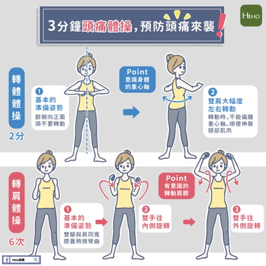
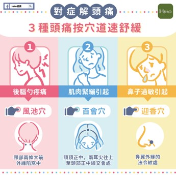

頭痛操
1. 轉體體操 — 2分鐘 可以改善頸部周圍的肌肉痠痛，進而預防頭痛。
(1)基本的準備姿勢 讓自己意識到身體的重心軸，將臉朝向正面，頭不要轉動。
(2)雙肩大幅度的左右旋轉 在轉動肩膀的時候同樣不能偏離重心軸，順便伸展頸部肌肉。
2. 轉肩體操 — 6次 改善肩膀痠痛，預防頭痛。緊張性頭痛發作時也有效! ;
(1)基本的姿勢準備 雙腳打開與肩同寬，膝蓋稍微彎曲。
(2)雙手往內側旋轉 若不清楚姿勢，可以想像自己在背背包。
(3)雙手往外側旋轉 若不清楚姿勢，可以想像自己在脫衣服。
頭痛按摩穴位
1. 後腦勺疼痛：覺得後腦脹痛、不適。
按摩：風池穴 位置：後頸部頭骨下，兩條大筋外緣陷窩中，相當於耳垂齊平。
方法：用兩手大拇指指腹按壓穴道。
2. 肌肉緊繃引起的頭痛：經常感覺到肩頸痠痛、僵硬，也常頭痛的話，可能就是肌肉緊繃引起。
按摩：百會穴 位置：頭頂正中，兩耳耳尖往上至頭部正中線交會處。
方法：用兩手的中指交疊按壓。
3. 鼻子過敏引起的頭痛：鼻子過敏時也常頭痛，就可能是過敏引起的頭痛。
按摩：迎香穴 位置：鼻翼外緣的法令紋處。
方法：可用雙手拇指外側沿著法令紋做按摩。
以上僅供參考，如果頭痛頻繁發作且難以忍受或緩解，也有可能是疾病造成，建議就醫找出真正原因。